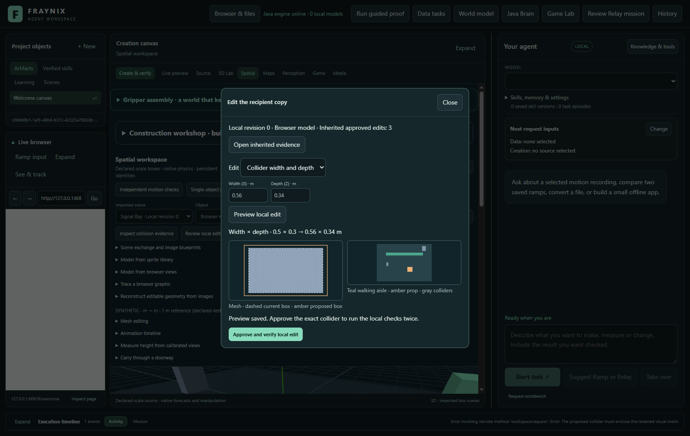
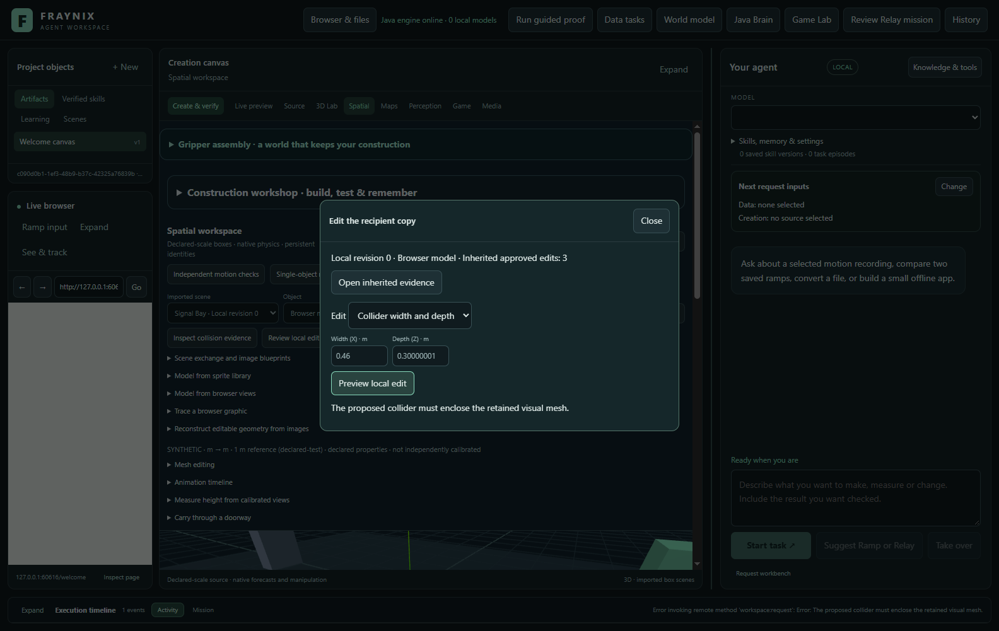
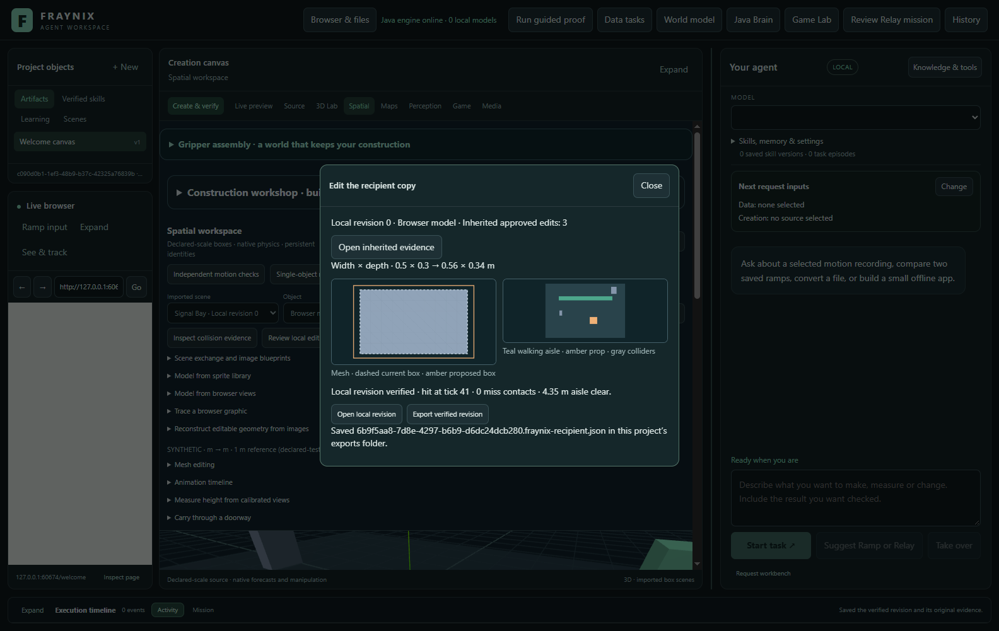
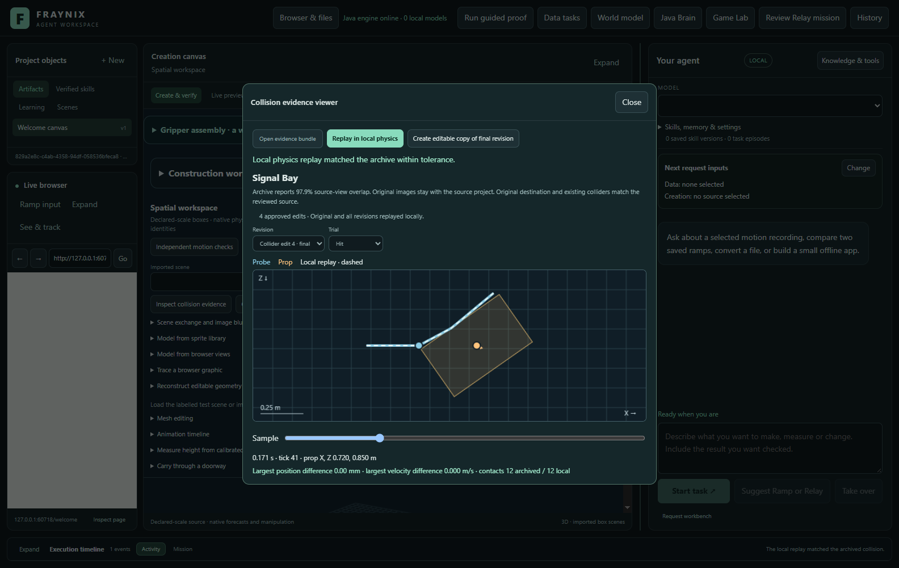

Review and replay a bounded collider edit
Compare the current and proposed collider against the exact mesh. Approve the new box, replay its collision and aisle, and inspect the result in Blender.
The 0.56 × 0.34 m box preserved the existing 696 triangles. The newest stage hit at tick 41, missed cleanly in the control, and kept the 4.35 m walkway clear.

Preview both box footprints against the retained mesh and the walking aisle

A proposal that clips the retained mesh is refused

Export the freshly approved collider with the original evidence

An independent project replays the edited collider at tick 41
System files
Open source